Plugin Version: 1.1.20 |
Release Notes
Plugin Version: 1.1.20 |
Release Notes
Overview
The Data Reporting Tools plugin is a flexible and easy to use tool for defining, editing and designing custom reports using report scopes. This plugin provides the user with a more intuitive and efficient module that improves the functionalities currently present in the Simple Reports ProcessMaker plugin.
Requirements
ProcessMaker Compatibility
This plugin version is fully compatible with:
- ProcessMaker 3.7.0 Enterprise edition or later if using MySQL 8. To know more details see:
Concepts
- Report: A report is a representation of a subset of information that has an organized format used in several ways, from informational reviews to decision making inputs. In ProcessMaker, a report is a representation of data generated and stored using the suite.
- Data: ProcessMaker handles data in three categories:
- Application Data: Application data is all the data related to the ProcessMaker application (users, roles, groups, permissions, login audit logs, etc).
- Process Data: Process data is all the data generated when running the BPM engine. The main characteristic of this kind of data is that it can be indexed by case (case number, number of times routed, dates of execution, times of execution, etc).
- User Data: User data is all the data that relates to a user; this data can be static or dynamic depending on the user (pm tables, case definition/variables, external data, etc).
- Data Range: A data range is a section of the data the user wants to use as a source to create a report. A data range is usually a table. A data table has the following characteristics:
- Can have a different access level created specifically for reporting.
- Can be static or dynamic depending on the sources of data involved. Always static when in the process of reporting.
- Data Scope: A data scope is a section of the data, similar to the data range but with a data owner. A data scope should have a data range and a set of permissions so users can access this information.
- Data Integrity: Refers to data that cannot be changed by a reporting tool.
- Static Information: ProcessMaker considers static information to be all information that does not change in a data range and data scope. Ex. Sales summary January 2015.
- Dynamic Information: ProcessMaker considers dynamic information to be all information that changes in a data range and data scope. Ex. Current Month sales.
How the Feature Works
Installation
Log on with a user such as "admin", who has the PM_SETUP_ADVANCE permission in their role and then go to ADMIN > Plugins > Enterprise Manager. Either install the Data Reporting Tools plugin by clicking on  Install from File and upload the plugin file or by clicking on its Install Now or Upgrade now button in the list of available plugins. For more information about plugin options, see Enterprise Manager Tool.
Install from File and upload the plugin file or by clicking on its Install Now or Upgrade now button in the list of available plugins. For more information about plugin options, see Enterprise Manager Tool.

After installing the plugin, make sure that the Data Reporting Tools plugin is
 enabled.
enabled.
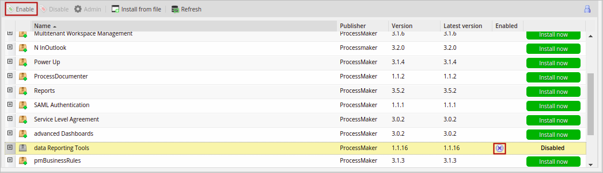
Note:
After updating the plugin, restart the server queue jobs:
supervisord service in the server.
Configuration Files
The Data Reporting Tools plugin uses a set of files to configure its own settings. These files are located at:
Use a plain text editor to edit their configuration.
Note: To comment in the .ini file use the character ; before the line you want to comment.

whiteTablesList.ini
The whiteTableList.ini file allows the user to access data outside of Report / PM Tables using the Data Reporting Tools plugin. By placing the name of a table into this file, the Data Reporting Tools Wizard will be able to access its data to generate scopes and final reports. By default, the whiteTableList.ini file has the following content:
variablesConfig.ini
The variablesConfig.ini file stores the definition of the variables that can be used inside the Data Reporting Tools Wizard. This configuration includes system variables and table fields as custom variables. By default, the variablesConfig.ini file has the following content:
Note: Take into consideration that the value of the variable SYS_LANG is set only when the user selects the language and logs on ProcessMaker. This variable is not updated when the user changes the language directly in the ProcessMaker URL.
The format to add variables is as follows:
skinConfig.ini
The default skin of the Data Reporting Tools plugin can be customized in the skinConfig.ini file by replacing path-css in the file code with the path of your css file.
For example:
Report Permissions
When activating the plugin, a set of four new ProcessMaker permissions will become available. This set of permissions is used to limit the access and functionalities that users have in the different levels of the plugin's security architecture.
- REPORT_ADMINISTRATOR: This permission provides access to the Scope and Import - Export options under the Data Reporting Tools menu in the Home tab. These options allow you to create, import and export report scopes.
- REPORT_DESIGNER: This permission provides access to the Report Designer option under the Data Reporting Tools menu in the Home tab. This option allows you to design reports within the limits of the selected scopes.
- REPORT_USER: This permission provides access to the Report User option under the Data Reporting Tools menu in the Home tab. This option allows you to access final reports of the user cases designed in the Report Designing process.
- REPORT_MANAGER: This permission provides access to the Report User option under the Data Reporting Tools menu in the Home tab. In this case, this option allows you to access final reports of the user cases and the cases of the groups members assigned as a manager in the Report Designing process.
Go to Admin > Users > Roles to assign these permissions to one or more roles. It is possible to combine these permissions in a single role. For instance, a user can have the REPORT_DESIGNER and REPORT_ADMINISTRATOR permissions at the same time.

The creation of a report follows a workflow that goes from the moment of generating the data, to the moment when the report is displayed. This workflow is defined in the four stages outlined below:

- Report Tables / PM Tables: The workflow begins with the creation of report tables and PM tables by the process designer (the user with the PM_FACTORY permission assigned). Remember that a report scope can access the data stored in all the report tables and PM tables in all processes in the current workspace.
- Report Scope Creation: A report scope sets the data that can be accessed by the report designer. At the same time, the report designer is able to create multiple instances of a report using a single report scope. In this way, each report can share the same scope while containing data unique to its case. For instance, a report can summarize all sales made or create a summary of all clients within a specific month. To create a report scope, the user must have the REPORT_ADMINISTRATOR permission.
- Report Designing: In this stage, the user assigned with the report designer permission, designs a report from a report scope by defining the data and filtering the conditions and the users that will have access to the report. For instance, the report designer might create three instances of an expense report that share the same report scope, but contain the expenses of a different division.
- Report View: The users that have the REPORT_USER permission can only access the final reports assigned to them.
Security Architecture
The Data Reporting Tools plugin has four security levels that restrict the access to the information in report/PM tables.
- Data in All Report / PM Tables: The first security level includes all the data stored in all report/PM tables in all the processes in the current workspace.
- Report Scope: A subset of the data stored in all the report tables chosen by the report administrator.
- Report Data Available for Report Users: This is the subset of data corresponding to the final report in the cases that the user has participated in.
- Report Data Available for Report Managers: This is the subset of data in the final report restricted to the cases where the report manager is also the manager of all users in the case, as well as his/her own cases.
Creating a Report
Report / PM Tables
Report tables and PM tables allow data to be easily accessed. As it was mentioned before, the data contained in a report is selected from report/PM tables. First, create the tables that will contain the data that will be represented in the final report.

Note: If you add the APP_UID field to a PM Table or Report Table, make sure to use the correct APP_UID to avoid redirecting the Case Link to the Home tab instead of the case.
Creating a Report Scope
First, assign the REPORT_ADMINISTRATOR permission to the role of the user who will be the report administrator. When logging on with this user, a new section named Data Reporting Tools will be available with four new options under the Home tab.
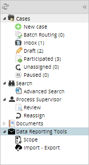
Click on Scope and the list of scopes displays. A report scope includes the definition of which columns in the report and PM tables can be used to create reports. A report administrator can define multiple report scopes.

- Search: Enter the name of the scope in this field. As text is entered, matches display in the list below.
- Create: This option opens the Scope Creation window.
- Scope: This column shows the names of the scopes. This list is sorted in ascending order by default.
- Scope Description: This column shows the description of each scope.
- Edit: Edits the scope configuration.
Delete: Deletes a scope. A confirmation message will be displayed to confirm the action.
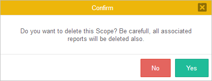
Click on Yes to delete the scope and all reports associated to the scope.
To create a new scope, click the Create button.The Scope wizard will guide the user step-by-step through creating a query to retrieve data from the tables and defining the data scenario that the report designer will use when creating the final reports. First, the scope definition dialog will be displayed where the user should fill out the following fields:

- Scope Name: A name to identify the scope. Note that each scope name should be unique. This field is required.
- Scope Description: Description of the purpose and content of the report scope. This field is optional.
Note 1: Take into consideration that the information entered when creating or editing a scope is saved when the user clicks on any of the Next buttons located in each of the dialog windows.
Note 2: As a best practice, do not use special or non-alphanumeric characters in names.
Once the name is defined, click Next and the Tables tab display. This tab has the following sections:

- Tables: In the tables section, all the report and PM tables from all processes are available to be chosen. Select one or more tables and the fields of each table will display in the Selected Tables section. It is recommended to include only the necessary tables in the scope of the report to ensure that only necessary data is included.
- Selected Tables: Select the required columns in each report or PM table by checking the box next to each column.
- Case Link: The field APP_UID contains the case's unique ID number and the option to create a link to that case. When pressed, the Dynaform selected in the Dynaform to show a case summary option in the process configuration will display. If no Dynaform was set in that option, the case summary of that specific case will display. Note that this option is only available if the table selected in the Tables section is a Report Table.
Join: If more than one table has been selected, the Join section will become available to join the data from a column in each table. To create a join relationship, choose a table in the left, another in the right and select the joining columns. One or more conditions can be added to specify multiple join conditions. The two columns in the left and right tables that are joined do not need to have the same name, but must have compatible data types.

Filters: The Filters section displays the criteria that is used to limit the number of rows of data that are retrieved. Select the appropriate condition from the corresponding dropdown list and enter the relevant value in the textbox (if applicable). In this example, all the records in the report table "Credit Requests" are selected, with the exception of records with the date: "2016-06-07".
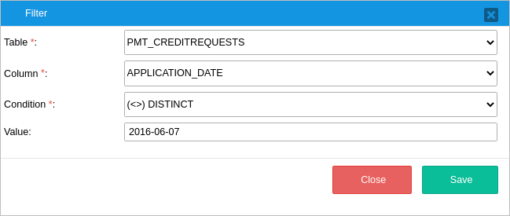
- Table: Choose a table. Only tables selected in the Tables section will be listed. This field is required.
- Column: Choose a column to apply the criteria to. This field is required.
Condition: The conditional operator used to filter the expression. This field is required. The following operators are available:
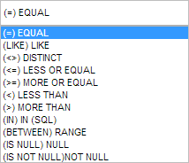
Value: The value used as a reference for the condition. Filter conditions can use values entered manually by the report designer, or process variables defined in the
variablesConfig.inifile.A calendar will display if the data in the selected column has the date or datetime type.
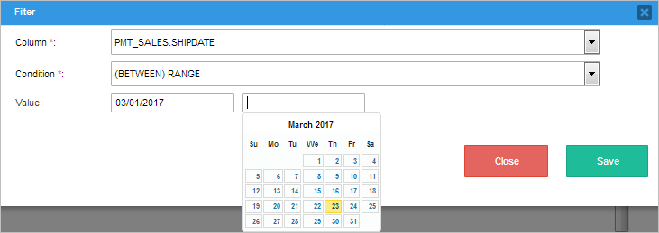
Warning: Report filters aren't affected by Gadget filters because as a hierarchical structure, Report filters have more priority.
Edit SQL: This option manually edits the SQL query generated by the wizard manually.

Take into consideration that if the user edits the wizard configuration manually with the Edit SQL option, the wizard configuration set up before, will be overridden by the SQL query modification and an alert message will display to confirm the action.
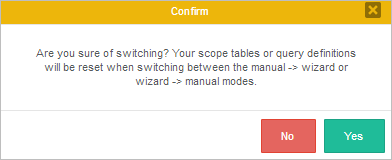
Warning: If you define a scope manually and one or more fields don't have an appropriate alias as it is mandatory, an error message will display.

- Preview: Shows a preview of the records included in the scope. For security reasons, the data displayed will be limited to the first three characters.

Once ready, click Next to assign the report users in the Report Users tab. Only the list of users or/and groups assigned in this section will have access to the final reports.

Finally, assign the users that will be report designers in the Report Designers tab. Remember that only the users selected in this step will have access to this scope to design the final reports.

Exporting and Importing Scopes
Scopes can be exported and imported from the Import - Export section under the Data Reporting Tools menu in the Home tab.
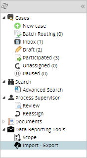
When clicking this option, the following section will display.

Exporting Scopes
After clicking the Export option, the following window displays:
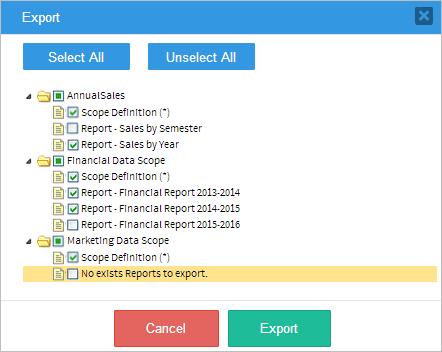
This window lists all the scopes created previously in ascending order. By selecting a report scope, the user can select the scope definition and which reports will be included in the export (.pmp) file. Note that all the scopes can be selected at once by clicking the Select All button.
After selecting the scopes, click on Export and a .pmp file will be generated containing the selected scopes.
The .pmp file will be downloaded automatically depending on the browser's configuration.
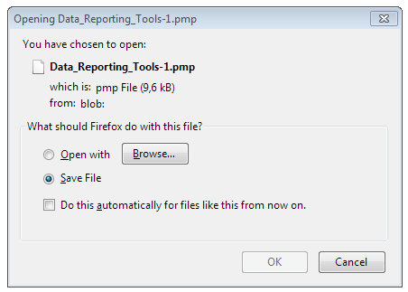
Importing Scopes
By clicking the Import option, the following dialog window will display to import a .pmp file.
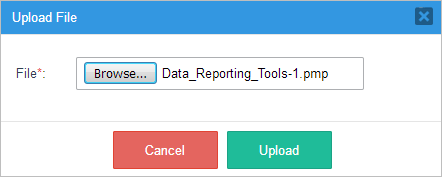
Import the file by clicking on Browse... and in the dialog window that opens navigate to your existing .pmp file, click Open and the import process will start.
The .pmp file can include scope definitions, report designs and final reports depending on which options the user selected when exporting.
Report tables and PM tables associated with the imported scopes must already exist in the current workspace. Otherwise, the following error message will display.

When importing a .pmp file, take into consideration the following:
Existing scopes and reports will be compared with the ones that are imported. If they are different, the following window will be display to confirm the action:

- In ProcessMaker, only assigned groups in the scope and report configuration will be included in the export. The members of a group are not exported. Therefore, single users must be assigned again once the scope is imported.
Report Designing
Once the report scope is created, a report can be designed within the limits of the selected scope. Assign the REPORT_DESIGNER permission to the user in charge of report designing. A new menu option named "Report Designer" will become available under the user's Home tab.
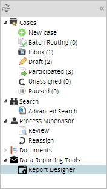
Click on this new option and a list of the reports designer by the current report designer will display. To create a new report design, click the Create button.

The Report Definition dialog will be display. Complete the following fields:

- Report Scope: Select a report scope. Only scopes that were designated to the current report designer will be listed. This field is required.
Report Name: Write a name to identify the report. Each report name should be unique and will be validated before saving the report definition. This field is required.
Note: As a best practice, do not use special or non-alphanumeric characters in names.
- Report Description: Write any additional information to describe the report content. This field is optional.
Click Next to continue. In the Tables tab, configure the following sections:
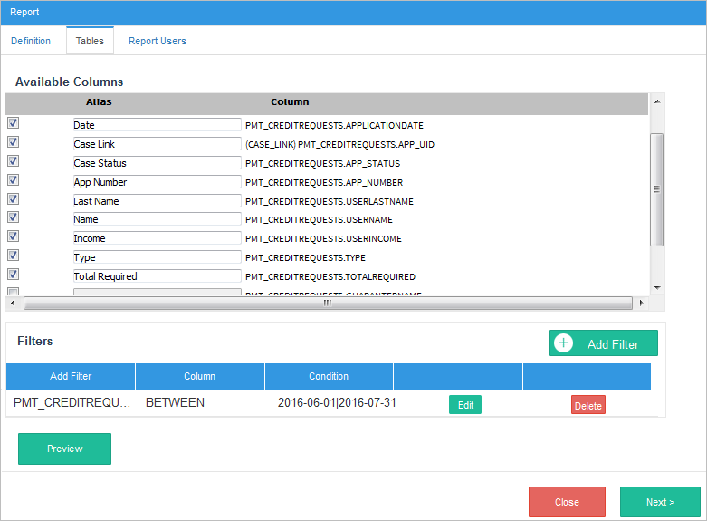
- Available Columns: These columns represent the data that the end user will see in the report. Only columns selected in the scope creation process will be displayed in this list. Select the column by checking the box next to its name. The order of the columns can be changed by dragging and dropping a column to another place in the list.
- Alias: Give the column an alias to make it easier to identify. The column heading will be replaced by the alias in the final report.
- Column: Name of the column.
Filters: In the bottom section, the user can add filters to one or more columns to determine which records the report will include or exclude. Criteria specified in this section is used to generate an SQL WHERE clause to limit the data retrieved.
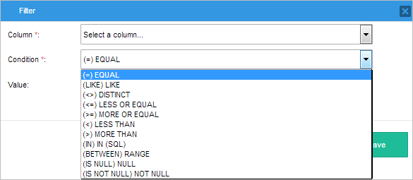
- Column: Select a column to apply the filter to. This field is required.
- Condition: Select a comparison operator from the options in the dropdown, This field is required.
Value: Depending on the selected condition, one or two fields will become available to set the comparison value. This field is optional. Filter conditions can use manual values or process/system variables defined in the
variablesConfig.inifile. For example, filter by the user currently logged on using the variable@@USER_LOGGED.A calendar will display if the selected column has a date or datetime type.
- Preview: Generates a preview of the configured report design. For security reasons, the displayed data is limited to the first three characters.

In the Report Users tab, select the users or user groups from the left list to assign them as report users. The list of available users and groups that the user can choose from is limited by the users and groups defined in the report scope.
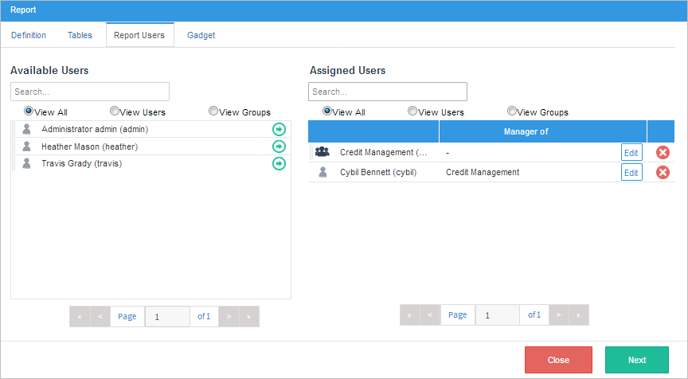
Report Manager
Report users are able to see the final report, but only the information about cases where they have participated in. To view additional information, a report user can be assigned as a Report Manager of a group of users.
A report manager is able to review the information provided in the report about the cases that they have participated in, as well as all the cases of the assigned group, even if he or she didn't participate in those cases. To see the final reports of the manager and the members of their groups assigned additionally needs to have a role with the REPORT_MANAGER permission.
To assign a report user as a report manager, click the Edit button next to the report manager name. The following dialog window will display.
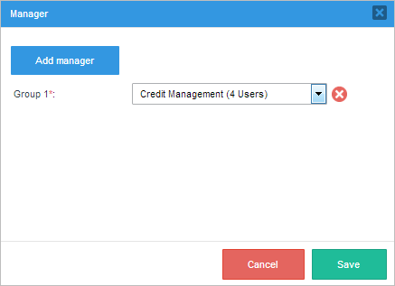
- Add manager: Click this option to add a group of users. More than one group can be added.
Once the report users are set, click Next to configure the Gadget tab.
Gadget
The Gadget tab allows the user to select between two types of reports: table and charts. The steps the user will have to complete to create the report will depend on the report type selected.
Table
To create a table report, select the Table option in the Gadget Type field and configure the following fields:
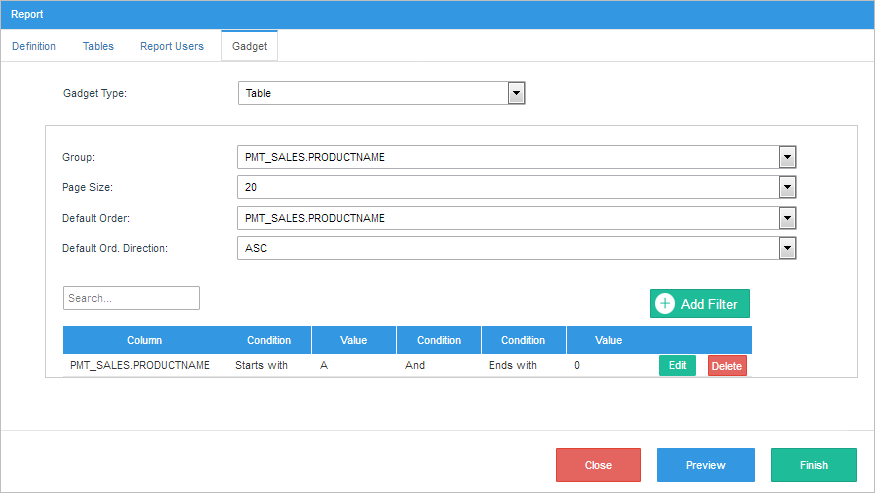
- Group: Creates groups within the table that can be grouped by date, column, status, etc. This field is optional.
- Page Size: Choose the number of records displayed on each page. The available options are: 10, 20, 50, 100.
- Default Order: Sorts the report data using the information within a column, such as date or name. This field is optional.
- Default Order Direction: Select the column then select "Ascending" or "Descending" in the Default Order Direction dropdown. This field is optional.
Add Filter: Add a filter to narrow the data displayed in the table report.
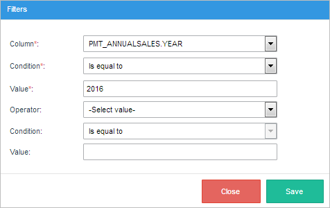
- Column: Select one of the columns in the report. This field is required.
- Condition: Select the condition that will be applied to the column's values. This field is required.
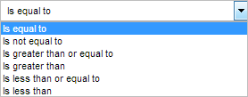 - Value: Set the comparison value. This field is required.
- Operator: If required, select an operator: "and" or "or", or both.
- Condition: Select the second condition that will be applied to the column's values.
- Value: Set the comparison value of the second condition.
Once the configuration is set, the user designer can click on Preview to see how the final report will look like in the dialog window that is displayed.
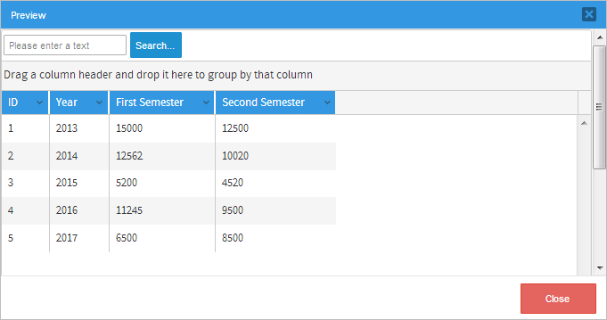
Click the Finish button to complete the wizard and save the configuration. The final report will be generated and listed under the Report User menu option.
Charts
Considerations Before Creating a Chart
Charts provide a summary view of the data. However, with large datasets, the information on a chart can become obscured or unreadable. Before designing a chart report, prepare and understand the data carefully.
A chart, like a table, is usually bound to a single dataset. To display multiple datasets stored in multiple tables in the same chart report, create a report design using the JOIN option explained previously.
To display the data more clearly, reduce the number of categories in your dataset by filtering the dataset or add a condition to the design that reduces the number of rows returned.
Creating a Chart Report
To create a chart report, select the Charts option in the Gadget Type field and configure the following fields:
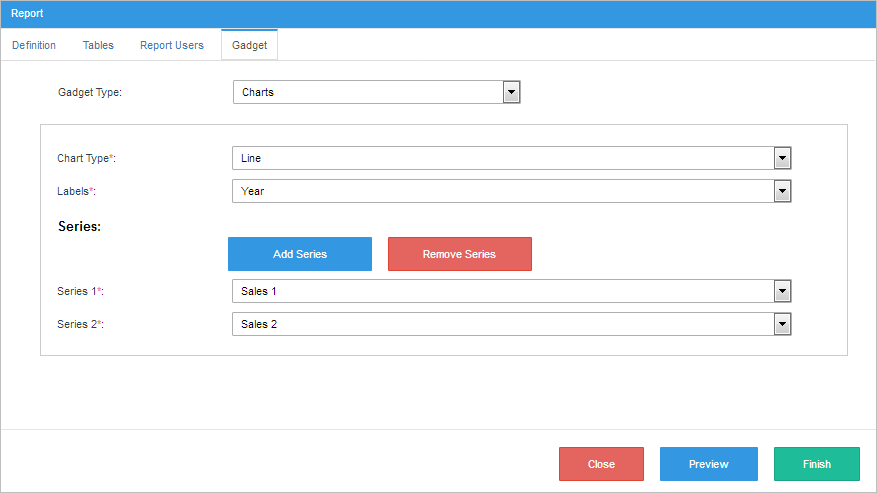
Chart Type: The following types are available:
Type Description Vertical Bar The report data will be displayed in vertical bars. This type of report is useful for displaying quantities by category. Horizontal Bar The report data will be displayed in horizontal bars. This type of report is useful for displaying quantities by category. Line A line chart plots data points on a line. This type of chart is usually used to show trend data. Pie The report data will be displayed as a pie chart. This type of chart is usually used to show the breakdown of a set of issues. Note that a pie chart can only have one set of series. Donut The report data will be displayed as a donut chart. Just like a pie chart, this type of chart is used to show the breakdown of a set of issues. Nevertheless, a Donut Chart de-emphasizes the use of area to make the viewer focus more on the changes in overall values. Note that both pie charts and donut charts can only have one series of data. - Labels: Select the column that will be displayed on the horizontal axis. The selected column values will also be represented in the chart legend.
- Series: Define the series of the chart by clicking the Add Serie button and selecting a column. A series is the set of data displayed on the graph. Note that the number of series that can be added is limited by the number of columns selected in the Tables tab. The chart will use the minimum and maximum values of a series to calculate the axis scale.
Once the gadget configuration is done, the user designer can click on the Preview button to see how the final report will look like in the dialog window that is displayed.

Click the Finish button to complete the wizard and save the configuration. The final report will be generated and listed under the Report User menu option.
Report User
Final reports can be accessed only by users or groups assigned in the Report Users section of the report designing process. Log on as a user with the REPORT_USER permission, and click the Report User option under the Home tab.
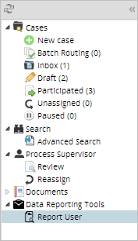
All the reports assigned to the logged on user will be listed. To find a particular report, enter the search criteria in the Search box at the top left corner of the panel.

To open a report, click the View Report button next to the name of the report. Note that each report type will display the report results differently and users should consider how they would like to view the data prior to creating the report.
Table Report
The table report displays the data in simple rows and columns format allowing the user to easily group, sort and filter the table data.

- Group: Drag column names from the data explorer to the section displayed in the image below to group the data by column. Records can be grouped by one or more columns.

- Order: To change the order of the records, click the little arrow in the right corner of the column.

- Sort Ascending / Descending: Sort the records in the selected column in either ascending or descending order. To sort by a field or switch the sort direction, click on the arrows in the column header.
- Columns: Uncheck the box next to a column name to hide the column. By default, all the columns selected in the wizard are checked.
- Filtering: Apply filter criteria to a column.

Export: ProcessMaker sends an email to the report requester that includes a link to the generated report file. This is an example of an email sent to a report requester:
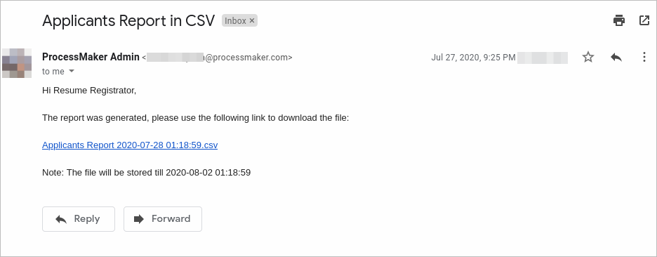Note: The Email Server Settings must be configured correctly, otherwise the report requester will not receive the generated reports.
The report view option has the following three exporting options:
Note 1: These three exporting options generate the data asynchronously. Exportation made during the process of data use a queue job on the server side, so the user is able to make any other actions in ProcessMaker while this task is running in the background.
Excel: The output of this type of renderer will be an
.xlsfile that opens in Microsoft Excel or similar.
Note: As of The Data Reporting Tools plugin version 1.1.10, Excel files export 150,000 records per 2 minutes, otherwise, increase the maximum execution time.
PDF: Renders a report in Adobe Acrobat Reader format.

CSV: Generates a comma-separated value (CSV) file. This file is a flattened representation of the data that opens in a viewing tool associated with
.CSVfile formats.
Note: Due to the Data Reporting Tool Security Architecture, when there is a Script Task after a Start Timer Event and an Operator wants to see all cases in the Report User > Table Report, follow the next steps:
Chart Report
The chart report displays the data in an easy-to-understand graphic. Depending on the type of chart selected, the chart report will look like:
Vertical Bar

Horizontal Bar

Line
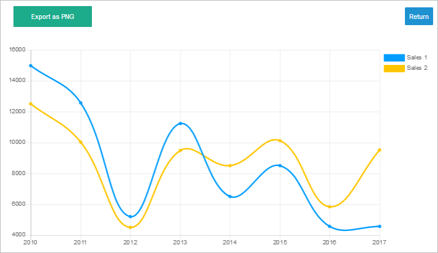
Pie

Donut
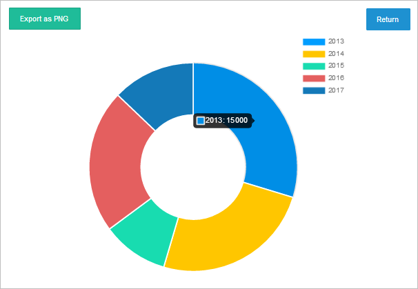
Each chart report has a chart legend next to the graphic. The chart legend takes its values from the column selected in the Labels field in the Gadget tab of the wizard.
Also, each chart report has the option to be exported as a .PNG image.
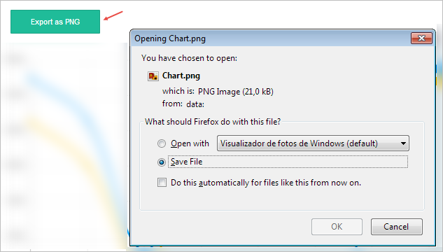